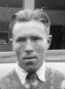

Per Mauritz (Masse) Forsberg
Blev 80 år.
| Född: | 1912-11-07 Villvattnet 13, Granträsk 5, Burträsk sn. [1] |
|---|
| Levde: | 1918 Villvattnet 13, Granträsk 5, Burträsk sn. [1] |
|---|
| Död: | 1993-02-23 Trädgårdsv 30, Tumba, Tumba fs, Botkyrka kn. [2] |
|---|
| Barn: |
|---|
| Klara Inger Andersson (1949 - ) |
| Vigsel: | 1950-04-08. [3] |
|---|
| : | 1971 Stg 278, Trädgårdsv 30, Tumba, Botkyrka fs, Botkyrka kn. [4] |
|---|
| Levde: | 1981 Stg 278, Trädgårdsv 30, Tumba, Tumba fs, Botkyrka kn. [5] |
|---|
| Levde: | 1991 Ålen 41, Trädgårdsv 30, Tumba, Tumba fs, Botkyrka kn. [6] |
|---|
| Barn: |
|---|
| Dick Per Erik Forsberg (1958 - ) |
| Klas Håkan Mikael Forsberg (1961 - ) |
Personhistoria
| Årtal | Ålder | Händelse |
|---|
| 1912 |
|
Födelse 1912-11-07 Villvattnet 13, Granträsk 5, Burträsk sn [1] |
| 1914 |
1 år |
Systern Selma Teresia (Thea) Forsberg föds 1914-03-05 Villvattnet 13, Granträsk 5, Burträsk sn [1] |
| 1918 |
|
Levde 1918 Villvattnet 13, Granträsk 5, Burträsk sn [1] |
| 1925 |
13 år |
Makan Märta Alice Linnea Svenningsson föds 1925-11-28 Stengårdshult fs, Jörnköpings län [4] |
| 1938 |
25 år |
Fadern Adolf Fredrik Forsberg dör 1938-07-25 Villvattnet 13, Granträsk, Burträsk fs, Burträsk sn [7] |
| 1943 |
30 år |
Modern Selma Theresia Lundström dör 1943-03-02 Villvattnet 13, Granträsk, Burträsk fs, Burträsk sn [8] |
| 1949 |
36 år |
Dottern Klara Inger Andersson föds 1949-03-23 Vännäs, Vännäs centralorts kbfd, Vännäs sn [4] |
| 1950 |
37 år |
Vigsel Märta Alice Linnea Svenningsson 1950-04-08 [3] |
| 1954 |
41 år |
Partnern Sanny Selina Ulrika Andersson dör 1954-08-22 Flarken 15:16, Nysätra fs, Nysätra sn [9] |
| 1954 |
42 år |
Systern Rut Viktoria Forsberg dör 1954-12-07 Granträsk, Kalvträsk fs, Burträsk sn [10] |
| 1958 |
45 år |
Sonen Dick Per Erik Forsberg föds 1958-06-13 Värnamo fs, Jönköpings län [4] |
| 1961 |
48 år |
Sonen Klas Håkan Mikael Forsberg föds 1961-08-15 Värnamo fs, Jönköpings län [4] |
| 1965 |
52 år |
Systern Eva Kristina Forsberg dör 1965-03-18 Risliden 23:1, Norsjö fs, Norsjö kn [11] |
| 1967 |
54 år |
Brodern Fredrik Halvar Forsberg dör 1967-05-22 Mesele 1:11, Västra Mesele, Degerfors fs, Degerfors kn [12] |
| 1968 |
55 år |
Systern Olga Augusta Forsberg dör 1968-05-14 Björkträsk, Åmsele fs, Vindeln kn [13] |
| 1970 |
57 år |
Brodern Gustaf Elof Forsberg dör 1970-01-26 Skellefteå sn |
| 1971 |
|
Märta Alice Linnea Svenningsson 1971 Stg 278, Trädgårdsv 30, Tumba, Botkyrka fs, Botkyrka kn [4] |
| 1981 |
|
Levde Märta Alice Linnea Svenningsson 1981 Stg 278, Trädgårdsv 30, Tumba, Tumba fs, Botkyrka kn [5] |
| 1981 |
68 år |
Brodern Adolf Ruben Forsberg dör 1981-03-15 Norsjö, Norsjö sn [14] |
| 1982 |
69 år |
Systern Helga Teresia Forsberg dör 1982-08-26 Vintjärn 6:6, Svärdsjö fs, Faluns kn (W) [15] |
| 1985 |
72 år |
Systern Tyra Konstantia Forsberg dör 1985-10-06 Vännäs kn [16] |
| 1991 |
|
Levde Märta Alice Linnea Svenningsson 1991 Ålen 41, Trädgårdsv 30, Tumba, Tumba fs, Botkyrka kn [6] |
| 1993 |
80 år |
Död 1993-02-23 Trädgårdsv 30, Tumba, Tumba fs, Botkyrka kn [2] |
Källor
| [1] | Burträsk AIIA:2F (1911-1925) fol. 1991 k.6/8 |
| |
| | |
| [2] | RTB 93 / SPAR 92f / SPAR 95 |
| |
| | |
| [3] | Mantalslängd 1991, Stockholms län, SPAR 95, RTB 93, SPAR 92 |
| |
| | |
| [4] | Mtl Stockholms stad och län 1971 |
| |
| | |
| [5] | Mtl Stockholm län 1981 |
| |
| | |
| [6] | Mantalslängd 1991, Stockholms län |
| |
| | |
| [7] | NV - Dödsannonsregistrering 1938-07-28 |
| |
| | |
| [8] | NV - Dödsannonsregistrering |
| |
| | |
| [9] | DB, FS / DOR 52-60 |
| |
| | |
| [10] | NV - Dödsannonsregistrering 1954-11-24 |
| |
| | |
| [11] | DB, FS / DOR 65, NV - Dödsannonsregistrering 1965-03-20 |
| |
| | |
| [12] | DA, AL / DOR 67, SPAR 95, RTB 93, SPAR 92 |
| |
| | |
| [13] | Sveriges Dödbok på CD-rom |
| |
| | |
| [14] | SPAR 90, RTB 81 |
| |
| | |
| [15] | SPAR 90, RTB 82 |
| |
| | |
| [16] | SPAR 90, RTB 85 |
| |
|
|  |
| Mauritz Forsberg. Kortet har jag fått av sonen Mikael. |
| |
|
| Mauritz Forsberg i skiddressen. Kortet har jag fått av sonen Mikael. |
| |
|
| Mauritz Forsberg i skiddressen. Kortet har jag fått av sonen Mikael. |
| |
|
|
| |
|
| Mauritz Forsberg i skiddressen. Kortet har jag fått av sonen Mikael. |
| |
|
2009. Torgny Lindgren på Facebook.com
Fotograf: Jarle Vines.
www.facebook.com/pages/Torgny-Lindgren/112171822128967?v=wall
|
|
{kind=link}
{kind=link}
{kind=link}